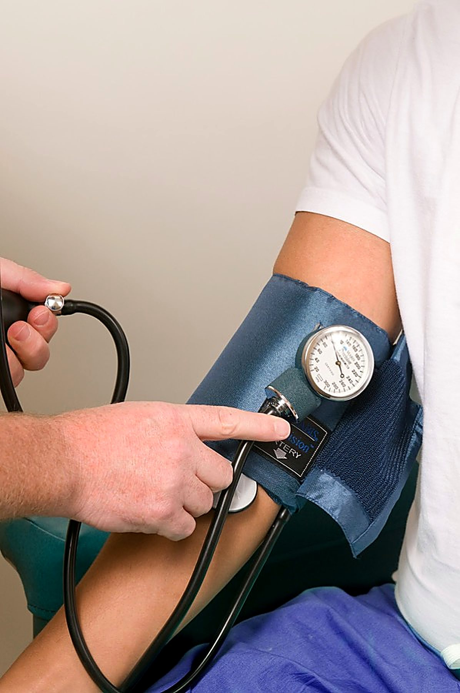
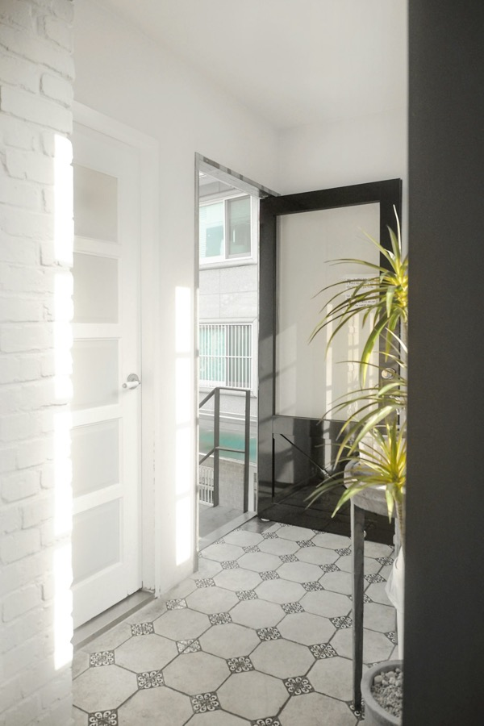
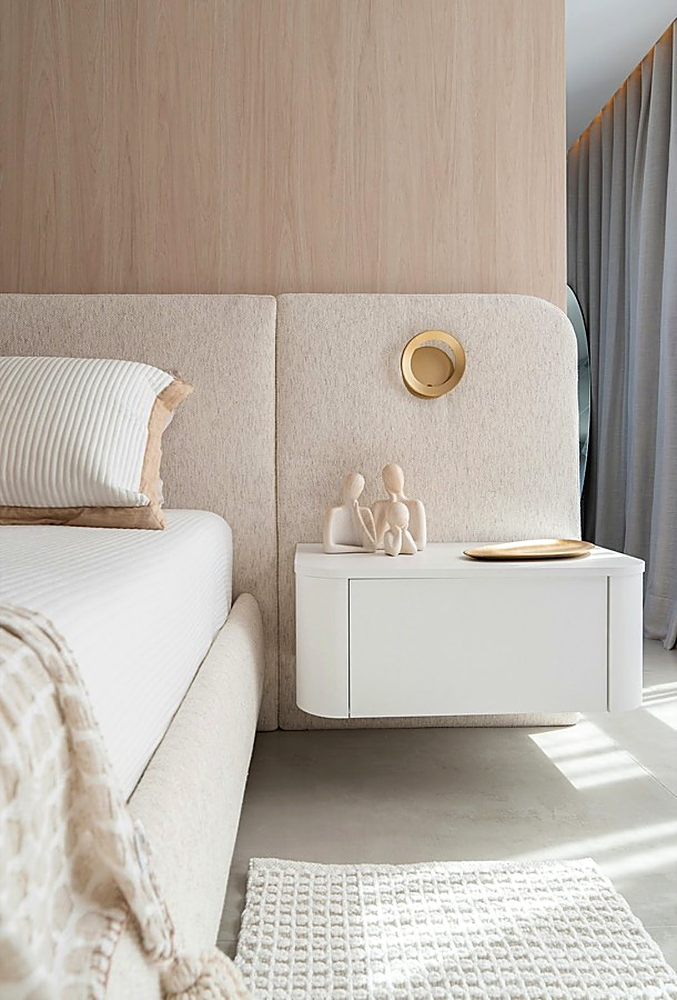
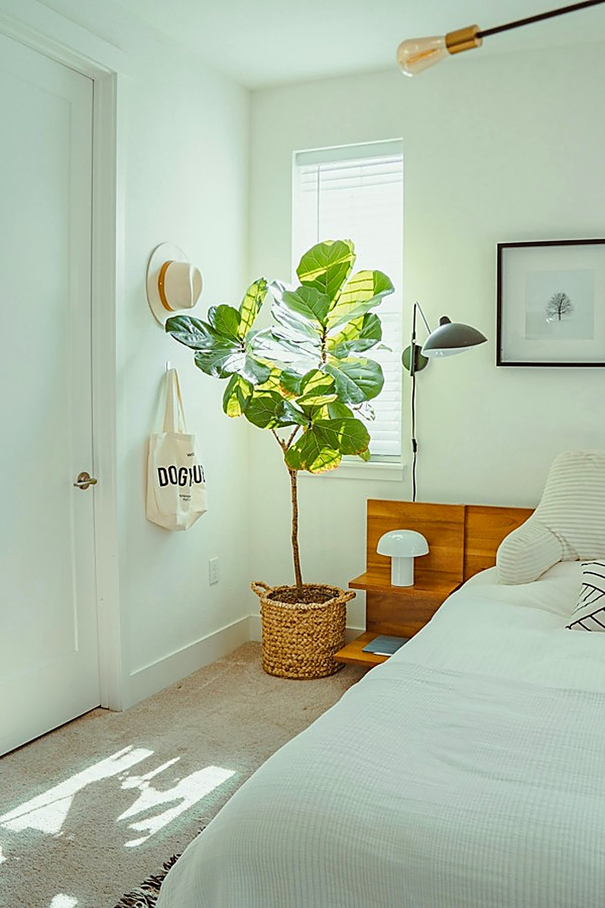
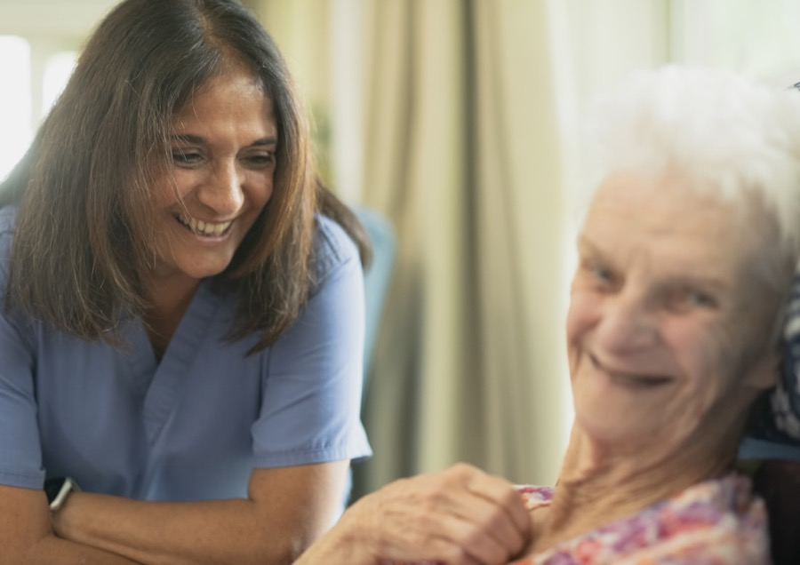
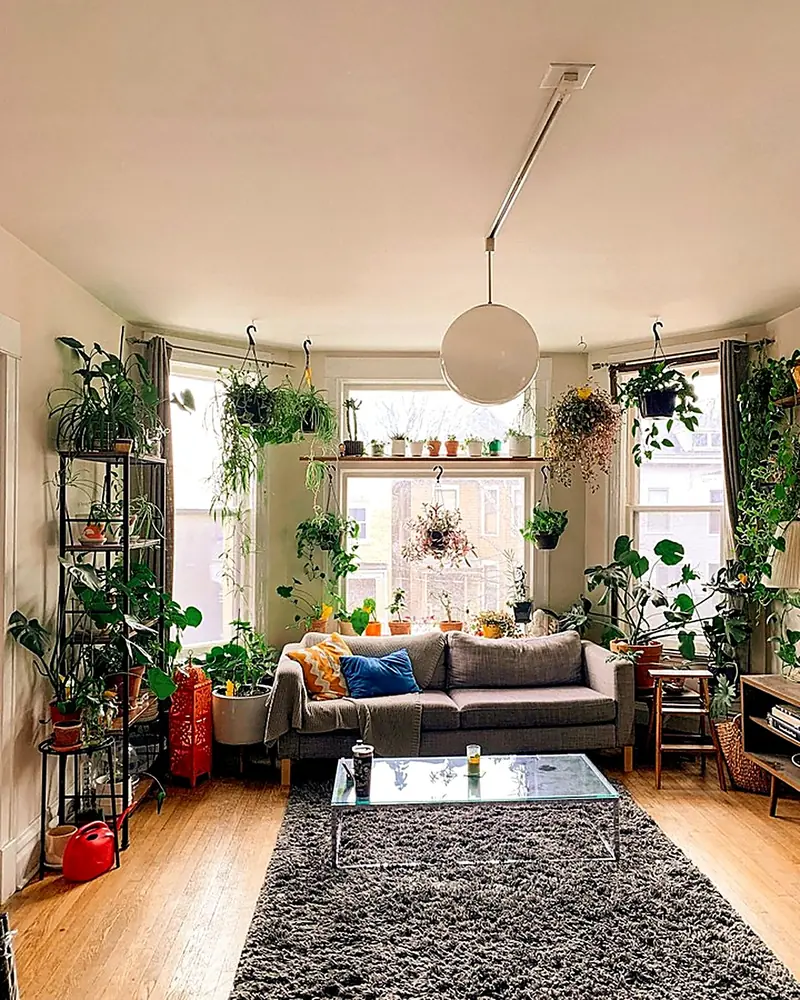
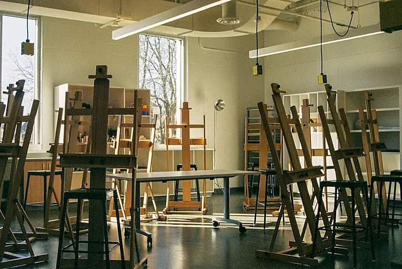
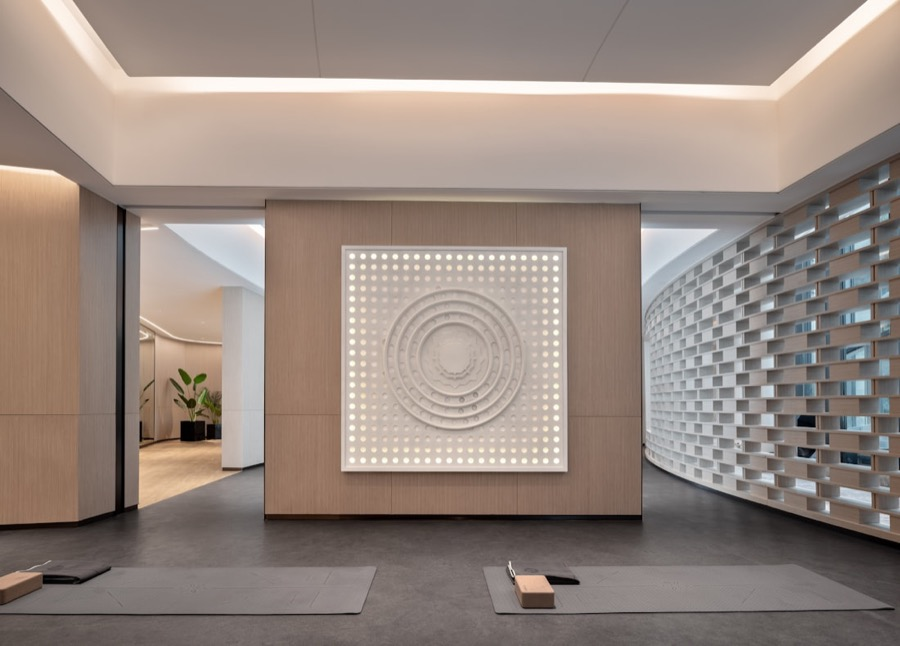
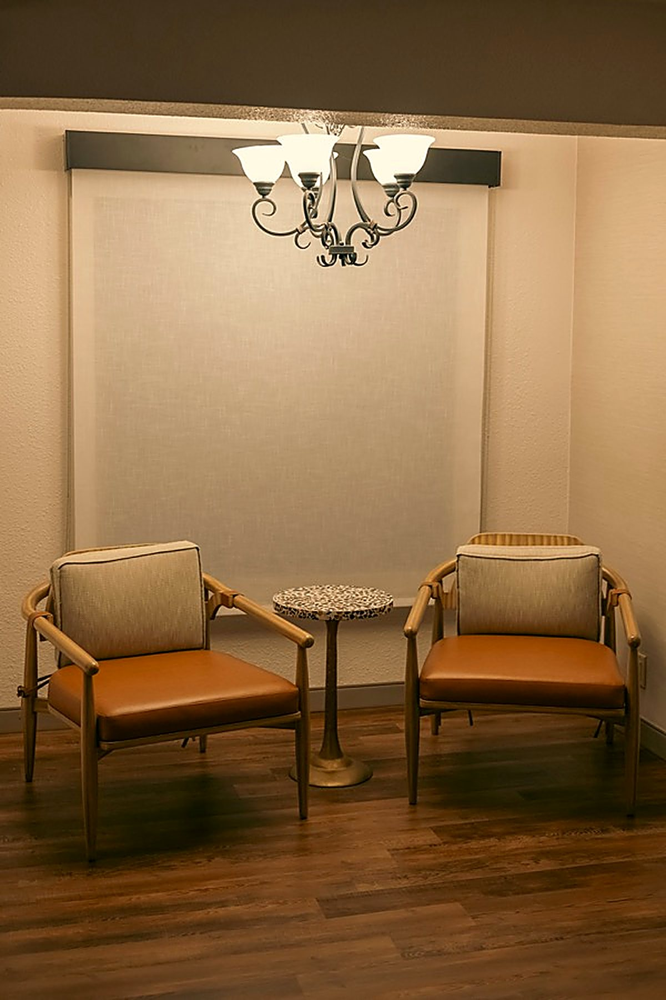

Physical withdrawal
Tremor, sweating, racing heart, rising blood pressure, nausea, insomnia, overwhelming anxiety. It starts a few hours after the last dose and usually peaks between the second and third day.
It is a physiological event: measurable, sometimes dangerous — and treatable. Medically supervised withdrawal and psychiatric care, provided at Clinique Espoir, El Menzah 9, Tunis.

The clinic treats withdrawal and psychiatric disorders. Tell us what brings you here: the rest follows.
With or without an associated addiction. These descriptions are here to help you recognise, not to diagnose: only a medical consultation can make a diagnosis.
Sadness or loss of interest lasting more than two weeks, most of the day, nearly every day. Often joined by broken sleep — waking at 4 a.m. — a changed appetite, tiredness on waking, slowness, guilt, and sometimes the thought that everyone would be better off.
Treatment: psychotherapy, an antidepressant where indicated, restarting rhythm and activity. Admission is warranted when there is suicide risk, refusal to eat, or when nothing moves in outpatient care.
An alternation between depressive episodes and phases of elation: a collapsed need for sleep without tiredness, accelerated speech, spending, outsized plans, irritability, disinhibition. Between episodes a person can be perfectly well, which often delays diagnosis by years.
Treatment: mood stabilisers, protection of sleep, psychoeducation of patient and family so early signs of a new episode get recognised. Alcohol and stimulant use markedly worsens the course.
Generalised anxiety running continuously, panic attacks with a sense of imminent death, phobias, obsessive-compulsive disorder, post-traumatic stress. Anxiety drives use: it is the leading reason people self-medicate with alcohol and sleeping pills.
Treatment: cognitive behavioural therapy and graded exposure, relaxation, maintenance medication if needed — while specifically avoiding long-term benzodiazepines.
Hallucinations, delusional convictions of persecution, disorganised speech, withdrawal, suspicion of those closest. Often the person does not experience themselves as ill, which makes the step impossible without the family.
Treatment: antipsychotic treatment, a safe place for the acute phase, rehabilitation afterwards. How early care starts weighs heavily on the long-term course.
Insomnia at onset or in the middle of the night, hypersomnia, an inverted rhythm, repeated nightmares. Rarely isolated: sleep is the first thing to go wrong in almost every psychiatric condition, and the last to repair after a withdrawal.
Treatment: treating the cause, restructuring hours, insomnia therapy, a gradual taper off sleeping pills already in place.
A stable, lasting way of functioning that causes difficulty: emotional instability and fear of abandonment in borderline states, avoidance of relationships, dependence, rigidity. Addictive behaviour and acting out are frequent.
Treatment: structured psychotherapy over time, work on emotion regulation, a clear and constant frame. Inpatient stays are for crisis periods, not for the underlying treatment.
Exhaustion that rest no longer repairs, cynical distance from work, a sense of ineffectiveness, then often a sudden collapse. Frequently accompanied by a quiet increase in alcohol or sleeping-pill use.
Treatment: stopping and stepping back, treating any depressive episode, work on the return — going back to work is prepared, not improvised.
Prolonged use shifts the balance of the nervous system. The brain is permanently compensating for the substance; when the substance goes, that compensation is left running alone. That is withdrawal — and depending on the substance it ranges from severe discomfort to a threat to life.
Tremor, sweating, racing heart, rising blood pressure, nausea, insomnia, overwhelming anxiety. It starts a few hours after the last dose and usually peaks between the second and third day.
For alcohol and benzodiazepines, stopping abruptly can cause seizures and delirium tremens — confusion, hallucinations, fever, dehydration. That is a medical emergency, not a rough night to get through.
Once the body is detoxified, the compulsion remains. It is triggered by places, people, times of day, an emotion. It is what causes relapse, and it is what the therapeutic work is aimed at.

Alcohol or benzodiazepine withdrawal carried out without medical supervision exposes you to seizures, delirium tremens and cardiac or metabolic complications. Supervised withdrawal treats those risks before they appear: monitoring of vital signs, an adapted protocol, hydration, vitamin B1. It also makes the ordeal markedly less painful — which changes everything about what follows.
Every substance is treated — alcohol, drugs, diverted medicines, tobacco — as well as addictions with no substance at all. The durations below are indicative: they vary with how long use has gone on, the quantities, age and general health. The protocol is decided after examination.
This is the most common case, and the one you must not handle alone: withdrawals add up and mask one another. Describe the situation on the phone; the order of priorities is a medical decision.
+216 00 000 000A successful withdrawal does not end when the shaking stops. Detoxification is the short part; what decides the rest is what gets built during and after it.
Speak to a doctorClinical examination, blood work, liver and cardiac assessment, grading of dependence severity, and a search for associated disorders — anxiety, depression, sleep, suicide risk. Nothing begins before the ground has been measured.
Day 1
Withdrawal is treated, not endured: a protocol specific to the substance, tapering doses, vital signs checked several times a day, hydration, vitamins, prevention of seizures and delirium.
Days 1 to 7, roughly
Sleep re-establishes itself, appetite returns, mood lifts — or reveals what it had been hiding. This is where the psychiatric disorder the substance was masking gets treated, and where the day gets its fixed hours back.
Weeks 1 to 3
Motivational interviewing, cognitive behavioural therapy, peer group work, identifying high-risk situations, a written plan for the tipping moments, and work with the family where that is possible.
Throughout the stay
Close follow-up appointments, continued treatment, a family session, referral to a peer support group and to the family doctor. The first month outside is the most fragile: it is followed closely.
3 to 12 months
The first sign of recovery is neither mood nor motivation: it is the night. Here, week by week, is what actually happens — the same room, the same bed, the same person, six weeks apart.
03 h 00 time of waking
Three hours of sleep, cut into pieces. The 3 a.m. waking is the hardest: it is the hour when withdrawal wakes before you do, and when people often use again just to get back to sleep.
The medical withdrawal is behind you. The tremor has stopped, blood pressure and pulse are coming down. Sleep returns in pieces: still short, still fragile, but it returns without the substance.
Sleep gathers into one block instead of three. It is the first reliable sign that the nervous system is resettling — well before mood follows.
The substance masks nothing now. What is left shows plainly: a depression, an anxiety, a long-standing sleep disorder. This is where psychiatric treatment takes over from withdrawal.
Getting up no longer takes courage. Appetite returns, weight stabilises, and the day has fixed hours again — meals, workshop, session, bedtime.
The urges are still there — they will be for a long time. The difference is that they now have a name, identified triggers, a response written in advance and someone to call.
Two weeks of full nights. That is the marker we aim for before discharge: not the absence of urges, which cannot be commanded, but sleep that holds on its own.
An illustration, not a photograph of a patient. It shows a common course after supervised withdrawal; real outcomes vary from person to person.
People rarely drink for no reason. Alcohol puts an anxiety to sleep, cocaine restarts a depression, cannabis switches off thoughts that keep circling, sleeping pills repair nights that bipolar disorder destroyed. Treating the use without treating what it compensates for is simply organising the relapse.
That is why withdrawal here is a psychiatric act: the same doctor runs the detoxification and treats the disorder that appears behind it, once the substance is gone.
Psychiatric disorders are treated here in their own right, not only when an addiction comes with them. As an outpatient, in day hospital or as an inpatient, according to what the situation calls for — and someone picks up at any hour on +216 00 000 000. The conditions we treat are detailed at the top of the page, and the Psychiatry in Tunis page gathers the essentials — when to consult, admission, the questions no one dares to ask.
If a doctor is already following you, you can give their name in the appointment form: with your agreement, we coordinate with them and they receive a report setting out the diagnosis made, the treatment and the proposed follow-up. We take over an episode, not the relationship.
Medication has a place, not the whole place. The rest happens in sessions, in groups, and in the rhythm of the day.
Drawing out the patient's own reasons rather than opposing them with ours. It is the approach that earns the most engagement in addiction medicine.
Identifying the thoughts and situations that come before use or crisis, and building a different response, in advance and in writing.
Hearing someone describe exactly what you thought you alone were living. It is often the moment shame drops enough for the work to begin.
Families are exhausted, angry, or over-protective. We explain the illness, what helps and what makes it worse, and what they are allowed to stop carrying.
Knowing your disorder, its early signs, what your treatment actually does. An informed patient relapses less and comes back sooner.
Painting, writing, music, for the moments when words do not come yet — common in the first days of a withdrawal.
Breathing, relaxation, walking, getting moving again. It acts on anxiety, sleep and craving, with no drug interactions.
Renutrition and correction of deficiencies after alcohol withdrawal, management of weight changes caused by medication.
Rhythm does part of the work. After months in which nothing had a fixed time, the body resettles because meals, workshops and bedtime come back at the same hour every day.
An example day for a full inpatient stay. The programme is adapted to each patient and reviewed with them every week.
People almost always wait too long — out of shame, or because they tell themselves they have it under control. One of these signs is enough to justify a call, and the call commits you to nothing.
Three questions, thirty seconds — and a clear course of action.
Question 1 of 3
Is there immediate danger — loss of consciousness, a seizure, suicidal talk, a violent act?
Question 2 of 3
In the last few hours: confusion, hallucinations, marked tremor, fever, or refusing to drink and eat?
Question 3 of 3
Has the situation lasted days or weeks, with no danger tonight?
Dial 190 (ambulance service) now. Then call us: we prepare for the arrival.
Call us now. A caregiver picks up at any hour and tells you what to do until you get here.
An admission can be prepared. Request an appointment: we call you back during the day, within two hours. And if tonight tips over, call.
This tool points the way; it replaces neither medical advice nor the emergency services. When in doubt, call: that is what it is for.
Someone hears or sees things you cannot perceive, holds delusional convictions, has not slept for several days, or talks about ending it. You do not need to know the diagnosis to act tonight: here is what to do, and who to call.
Any one of these signs is enough to call — and the call commits you to nothing.
These steps hold until help arrives; they do not replace the call.
And what makes things worse:
Once the crisis has passed, admission is prepared: consultation, day hospital or voluntary admission, according to what the situation calls for — how early care begins weighs heavily on the long-term course. You can request an appointment right now.
And if the person refuses to come? It is the most common situation: the page He refuses to come explains how to prepare the conversation, and how the law regulates admission at a relative's request when the person's state does not allow consent.
At Clinique Espoir, a private detox and addiction treatment centre at El Menzah 9 in Tunis — as a full inpatient stay, in day hospital, or as an outpatient, according to what the situation calls for. The clinic is open 24 hours a day, 7 days a week: single or double rooms, nursing presence day and night, medical transport on request. Located in El Menzah 9, the clinic welcomes patients from all of Greater Tunis — Ariana, La Marsa, Ben Arous — from across Tunisia and North Africa, and from abroad.








The photographs of the entrance and the reception are of the clinic itself. The other images illustrate how the spaces are arranged.
For tobacco or cannabis, often yes, with follow-up. For alcohol and benzodiazepines, stopping without medical supervision exposes you to seizures and delirium tremens: the decision is made after examination, never in advance and never alone.
The acute phase generally lasts a week. A stay of two to four weeks additionally allows sleep to stabilise, the underlying disorder to be treated, and the work on craving to begin. The duration is reviewed every week with the patient.
That is the most common situation. Call for yourself first: we help you prepare the conversation, choose the moment, and know what to do if things get worse. Admission is in principle with the patient's consent; where their state does not allow it, the law provides for admission at a relative's request, and the procedure is explained to you.
No. Relapse is part of the story of most dependencies; what matters is how long before you come back. Coming back after three days of using is not the same as coming back after six months — and nobody here reproaches either one.
Medical confidentiality covers the whole stay. No information is passed to an employer, an administration or a third party without the patient's written consent.
It depends on the type of care and the room. Prices are given on the phone, in detail and without obligation, before any admission. The What does it cost? page explains what drives the price.
The information on this page is general and does not replace a medical consultation. No treatment, no cessation and no dose change should be decided on the basis of this site.

Medically supervised care for addiction and withdrawal, for every substance: alcohol, benzodiazepines, opioids, cannabis, cocaine, pregabalin and other diverted medicines. Behavioural addictions too (gambling, screens).
Treatment of psychiatric and mental health disorders: schizophrenia, bipolar disorders, depression, anxiety disorders, sleep disorders, and other psychiatric conditions. General consultations and follow-up after an inpatient stay.
Psychiatrists, an addiction physician, a 24/7 nursing team and psychologists work together around the same patient. For discretion, practitioners' names are given from the first phone call.
Diagnosis, conduct of the withdrawal protocol and treatment of the conditions we care for — depression, bipolar disorder, anxiety disorders, psychotic disorders. The same doctor leads the detoxification and treats the disorder that shows once the substance is gone.
A physical work-up on admission — clinical examination, blood, liver and heart tests — then monitoring of the withdrawal: a protocol specific to the substance, tapering doses, prevention of seizures and delirium.
Vital signs taken several times a day — blood pressure, pulse, temperature —, medicines given and a night presence: the clinic is open 24/7, all year round.
Cognitive behavioural therapy, one-to-one sessions and support groups: spotting the thoughts and situations that precede use or crisis, and building another response, in advance and in writing.
Before you call, have to hand:
You don't know everything? Call anyway — the caregiver asks the questions.